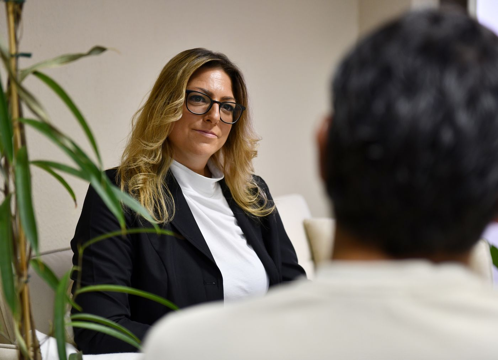
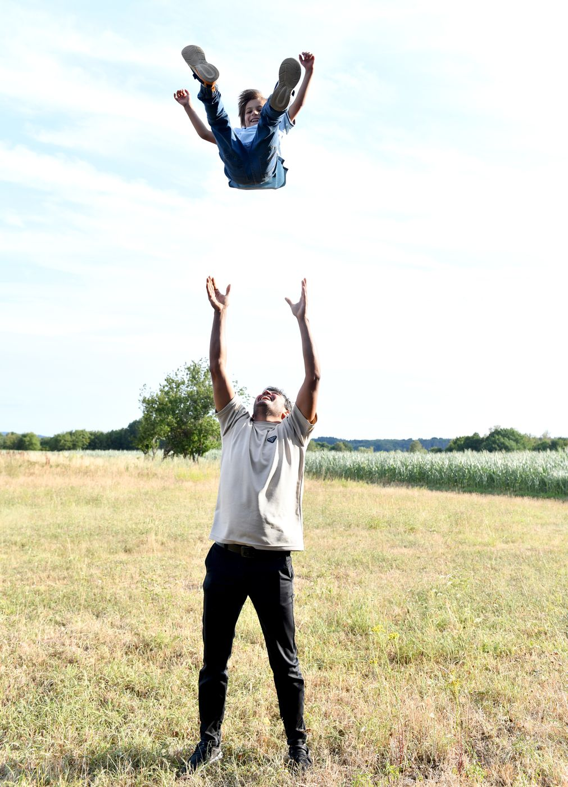
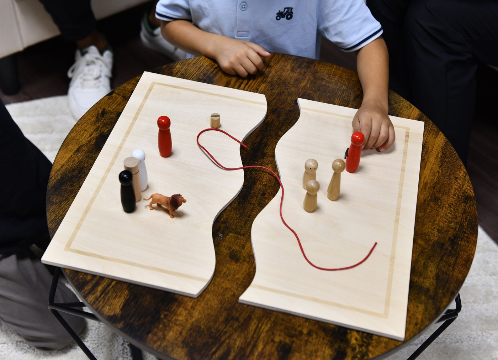
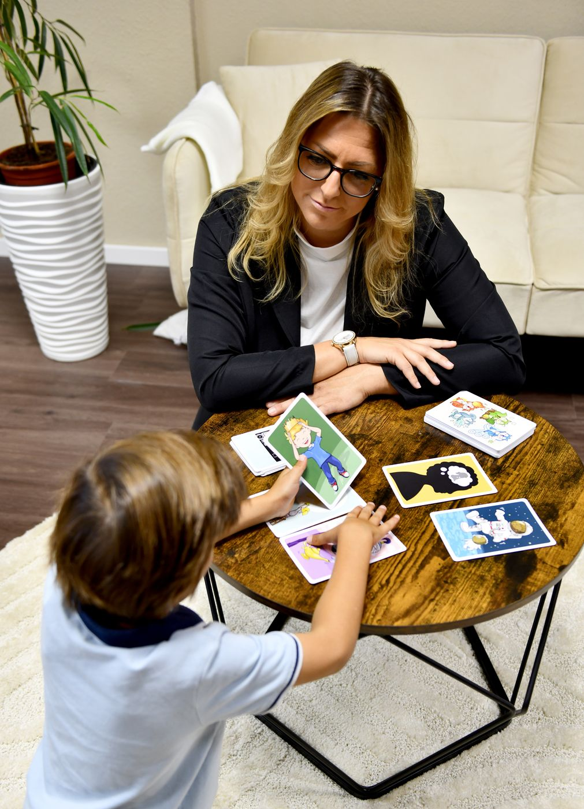
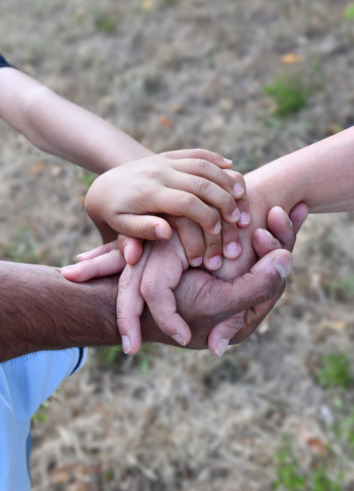
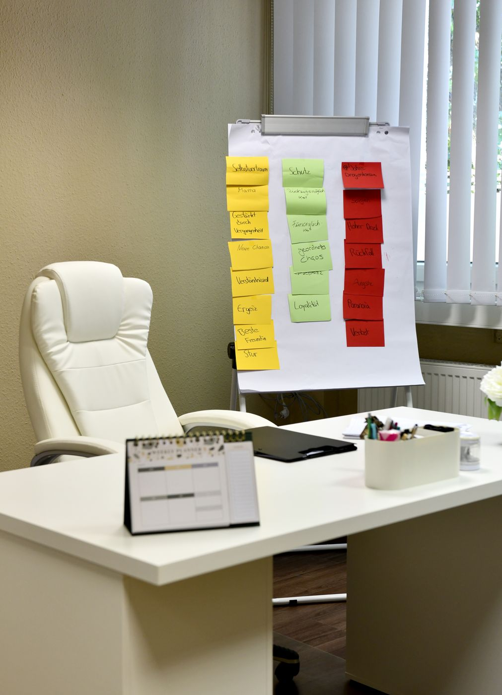
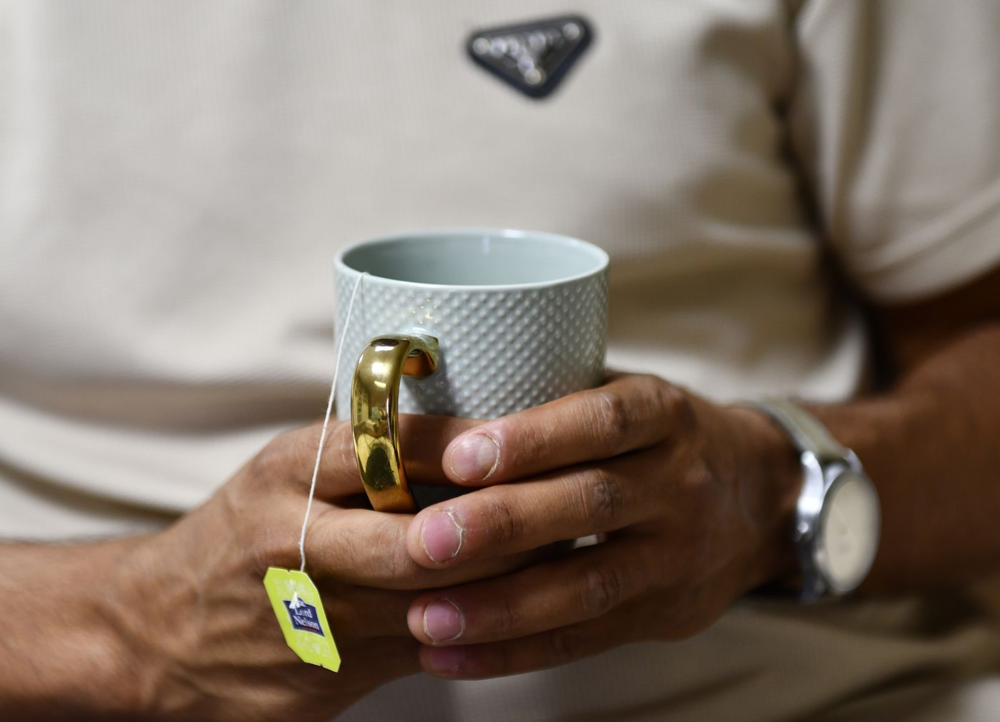
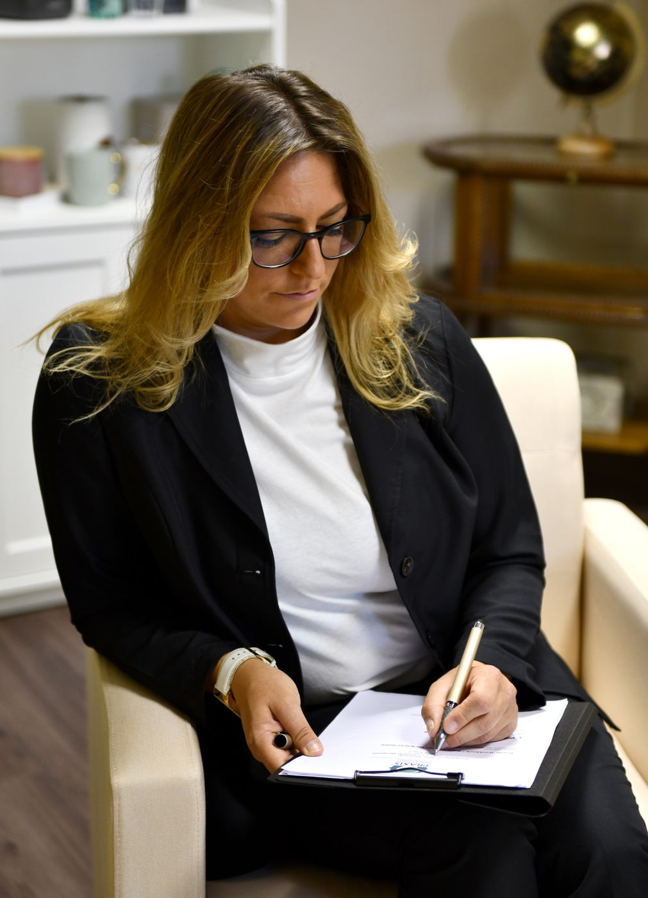
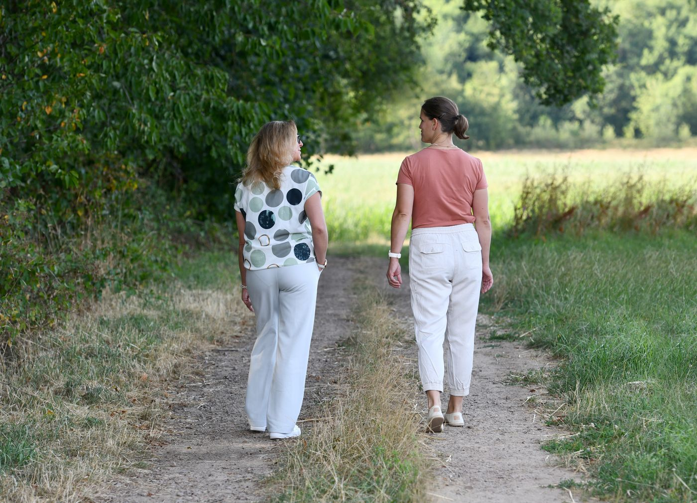

Beratungsangebote in Wadern und im nördlichen Saarland
Ich begleite Einzelpersonen, Paare und Familien bei persönlichen Krisen, Beziehungskonflikten, Bindungs- und Lebensthemen sowie bei Fragen rund um riskanten oder problematischen Konsum von Alkohol, Drogen, Medien oder Glücksspiel.

Systemische Einzelberatung
In der Einzelberatung schauen wir gemeinsam auf Ihre aktuelle Situation und auf die Zusammenhänge, in denen sie steht. Ziel ist es, wieder Klarheit zu gewinnen und eigene Handlungsmöglichkeiten zu erweitern.
- Belastende Lebenssituationen und Krisen
- Beziehungs- und Bindungsthemen
- Orientierung in Veränderungsprozessen
- Reflexion von Konsumverhalten
- Stärkung von Selbstwirksamkeit und persönlichen Ressourcen

Erziehungsberatung für Eltern
Erziehung fordert heraus, gerade wenn der Alltag ohnehin belastet ist. In der Beratung betrachten wir gemeinsam, was in Ihrer Familie gerade wirkt, und entwickeln Wege, die zu Ihnen und Ihrem Kind passen.
- Unsicherheiten im Erziehungsalltag
- Konflikte mit Kindern oder Jugendlichen
- Fragen zu Bindung und Beziehung
- Belastende familiäre Dynamiken

Familienberatung
In der systemischen Familienberatung ist nicht eine einzelne Person das Thema, sondern das Zusammenspiel aller Beteiligten. Wir betrachten Rollen, Erwartungen und Kommunikationsmuster und suchen nach neuen Wegen im Umgang miteinander.
- Wiederkehrende Konflikte im Familienalltag
- Veränderte Rollen nach Trennung, Umzug oder Verlust
- Belastungen durch Krankheit oder Krisen einzelner Familienmitglieder
- Arbeit mit Familienbrett und weiteren systemischen Methoden

Beratung für Kinder, Jugendliche und junge Erwachsene
Kinder und Jugendliche brauchen andere Zugänge als Erwachsene. Ich arbeite altersgerecht mit Gefühlskarten, dem Familienbrett und weiteren anschaulichen Methoden, damit auch das zur Sprache kommen kann, wofür noch keine Worte da sind.
- Ängste, Rückzug oder starke Anspannung
- Konflikte in Familie, Schule oder Freundeskreis
- Begleitung Jugendlicher im suchtbelasteten Familienalltag
- Orientierung beim Übergang ins junge Erwachsenenalter

Paarberatung und binationale Partnerschaften
In der Paarberatung geht es darum, einander wieder zu verstehen, statt sich in denselben Auseinandersetzungen zu verlieren. Ein besonderer Schwerpunkt liegt auf Paaren und Familien mit unterschiedlichen kulturellen Hintergründen.
- Kommunikationsschwierigkeiten
- Wiederkehrende Konflikte
- Unterschiedliche Erwartungen
- Fragen von Nähe und Distanz
- Kulturelle Unterschiede, Sprache und Rollenverständnisse
- Familienerwartungen und aufenthaltsbezogene Belastungen

Beratung bei problematischem Konsumverhalten
Ob Alkohol, Drogen, Medien, Glücksspiel oder andere belastende Gewohnheiten: Der erste Schritt ist selten der Verzicht, sondern das Verstehen. Aus meiner Arbeit in der Suchthilfe bringe ich langjährige Erfahrung in diesem Feld mit.
- Reflexion des eigenen Konsums
- Unterstützung bei Veränderungswünschen
- Entwicklung realistischer Ziele
- Rückfallprophylaxe und Stabilisierung
- Begleitung bei der Suche nach weiterführenden Hilfen
Diese Beratung ersetzt keine Entzugsbehandlung und keine medizinische oder psychotherapeutische Therapie. Bei Bedarf unterstütze ich Sie dabei, passende weiterführende Angebote zu finden.

Angehörigenberatung
Wenn ein Familienmitglied suchtbelastet ist, verändert das auch das Leben aller anderen. Angehörige tragen oft lange sehr viel allein. In der Beratung geht es um Ihre Situation und um das, was Sie brauchen.
- Überforderung im Alltag
- Schuld- und Verantwortungsgefühle
- Abgrenzung und der Schutz eigener Grenzen
- Kommunikation innerhalb der Familie
- Entwicklung hilfreicher Unterstützungsstrategien

Systemisches Coaching
Systemisches Coaching richtet sich an Menschen, die sich beruflich oder privat in Veränderungsprozessen befinden und ihre Situation mit professioneller Begleitung reflektieren möchten.
- Berufliche Neuorientierung und Entscheidungsfindung
- Umgang mit Stress und Überforderung
- Entwicklung neuer Perspektiven
- Selbstreflexion und persönliche Weiterentwicklung
- Stärkung von Selbstwirksamkeit und Handlungssicherheit
- Klärung von Rollen und Erwartungen im privaten oder beruflichen Umfeld
- Reflexion wiederkehrender Beziehungs- und Verhaltensmuster
Im Coaching steht nicht die Behandlung einer psychischen Erkrankung im Vordergrund, sondern die Aktivierung eigener Ressourcen, die Erweiterung von Handlungsmöglichkeiten und die Entwicklung konkreter, alltagstauglicher Lösungen.

Walk and Talk
Auf Wunsch kann die Beratung auch im Rahmen eines Walk and Talk stattfinden, also als begleitetes Gespräch in Bewegung in der Natur rund um Wadern.
Viele Menschen erleben das Gehen als entlastend und unterstützend, um Gedanken zu ordnen, neue Perspektiven zu entwickeln und leichter ins Gespräch zu kommen. Das Format eignet sich besonders dann, wenn das Sitzen von Angesicht zu Angesicht als zu direkt empfunden wird.
Wo und wie die Beratung stattfindet
Meine Praxis befindet sich in Wadern im nördlichen Saarland. Ich begleite Menschen aus Wadern und dem Hochwald, dem Landkreis Merzig-Wadern sowie aus angrenzenden Gebieten in Rheinland-Pfalz und Luxemburg.
In der Praxis
Beratungstermine finden in der Regel in Präsenz in meiner Praxis in der Unterstraße 14 statt.
Online per Video
Videoberatung ist nach individueller Absprache möglich, wenn Anliegen und Rahmenbedingungen dafür geeignet sind. Vereinbaren Sie dafür bitte zunächst ein kurzes Vorgespräch.
In Bewegung
Als Walk and Talk in der Natur rund um Wadern, wenn Ihnen das Gehen den Zugang zum Gespräch erleichtert.
Honorar und Konditionen
Ich arbeite ausschließlich auf Selbstzahlerbasis. Eine Abrechnung mit gesetzlichen Krankenkassen erfolgt nicht.
Terminabsagen und Ausfallhonorar
Vereinbarte Termine sind verbindlich. Sollten Sie einen Termin nicht wahrnehmen können, bitte ich um eine Absage mindestens 24 Stunden vorher (werktags).
- Bei rechtzeitiger Absage wird der Termin neu vereinbart.
- Weniger als 24 Stunden vorher oder bei Nichterscheinen: 100 Prozent des vereinbarten Honorars, sofern der Termin nicht anderweitig vergeben werden kann.
- Bei Beratungspaketen wird in diesem Fall eine Sitzung vom Paket abgezogen.
Ich bitte um Verständnis, dass die reservierte Zeit ausschließlich für Sie eingeplant ist.
Warum Selbstzahlerpraxis
- Zeitnahe Terminvergabe, da kein Antragsverfahren bei der Krankenkasse erforderlich ist
- Keine Weitergabe von Informationen an die Krankenkasse im Rahmen der Beratung
- Keine Hinterlegung einer psychischen Diagnose bei der Krankenkasse
- Flexible Gestaltung von Dauer, Häufigkeit und Umfang der Sitzungen entsprechend Ihres individuellen Bedarfs
Unter bestimmten Voraussetzungen können selbst getragene Kosten steuerlich berücksichtigt werden. Bitte lassen Sie dies gegebenenfalls durch eine Steuerberaterin oder einen Steuerberater prüfen.
Sie sind sich nicht sicher, was zu Ihnen passt?
Das müssen Sie auch nicht vorab wissen. Im kostenfreien telefonischen Erstkontakt klären wir gemeinsam, welches Format für Ihr Anliegen sinnvoll ist.